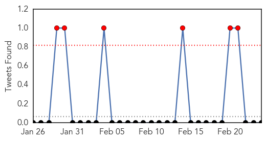
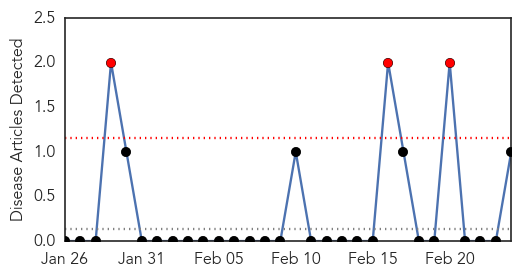
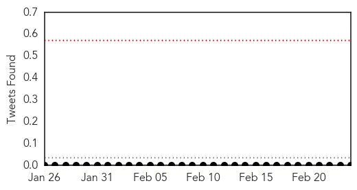

MERS
30-Day Web Trend
17 alerts, 0 warnings

30-Day Twitter Trend
7 alerts, 2 warnings

Article Locations

Article Confidences

Top Articles:
- 0.999
- UN experts warn of "critical knowledge gaps" on Saudi MERS virus
- 0.999
- WHO notes stubborn MERS puzzles as Saudi cases climb
- 0.999
- Saudi Arabia reports 5 more MERS cases
- 0.993
- Philippines on alert to prevent entry of infectious diseases: official
- 0.947
- ‘Children less susceptible to MERS infection’
- 0.946
- Good hygiene practices can prevent MERS-CoV - DOH
- 0.703
- 43 Cases of MERS-CoV in Saudi Arabia are Reported to WHO
Top Tweets:
- 0.664
- AFD Blog `Saudi MOH Reports 5 New MERS Cases' MERS-CoV http://t.co/impUBVeRNc
- 0.551
- AFD blog `Postcards From The MERS Twitterverse' MERS-CoV http://t.co/oOzKYDuI3H
- 0.537
- reassesses the risk of MERS-CoV to Europe as cases rise in Saudi Arabia again: http://t.co/o7atnNYDzI”
- 0.510
- ECDC reassesses the risk of MERS-CoV to Europe as cases rise in Saudi Arabia again: http://t.co/pIO6eoxXRs
West Nile Virus
30-Day Web Trend
3 alerts, 0 warnings

30-Day Twitter Trend
0 alerts, 0 warnings

Article Locations

Article Confidences

Top Articles:
Top Tweets:
-
No tweets found for Feb 24, 2015